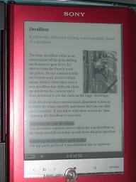

The following are notes about the ePub output generated with the Open Toolkit ePub
plug-in.
Figure 1. ePub viewed in an ebook reader device

The ePub generated by the Dita4Publishers plug-in can be used with the default
styling. However, you have the possibility to customise the look and feel of the ePub
just like you can do with the other outputs of the Open Toolkit. This will involve a
combination of transform and CSS overrides just like you would do for the html output of
the Open Toolkit.
The ePub output behaves similar to html output but you don't have the same level of
flexibility.
Re-use of Existing Content
Use an existing ditamap or create a new
map that references existing content topics. You don't need to create special topics for
your ePub output.
Reflowable
The text in an ePub is reflowable just like html on a
website. In fact, the ePub package is a special zip file of html files.
Careful Use of CSS
You'll need to read about what CSS styling is
allowed with ePub. The default output is quite flat. In this sample output you see
extras styling applied to:
Pulling in Content
The following content is pulled in just like with
any other output.
- title and shortdesc of ditamap child elements
- strings for related topics
- conref (content reference)
Viewing the Generated ePub
The generated ePub can be viewed as
follows: